This post describes how to solve mazes using 2 algorithms implemented in Python: a simple recursive algorithm and the A* search algorithm.
Maze
The maze we are going to use in this article is 6 cells by 6 cells. The walls are colored in blue. The starting cell is at the bottom left (x=0 and y=0) colored in green. The ending cell is at the top right (x=5 and y=5) colored in green. We can only move horizontally or vertically 1 cell at a time.
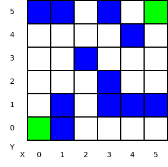
Recursive walk
We use a nested list of integers to represent the maze. The values are the following:
- 0: empty cell
- 1: unreachable cell: e.g. wall
- 2: ending cell
- 3: visited cell
grid = [[0, 0, 0, 0, 0, 1],
[1, 1, 0, 0, 0, 1],
[0, 0, 0, 1, 0, 0],
[0, 1, 1, 0, 0, 1],
[0, 1, 0, 0, 1, 0],
[0, 1, 0, 0, 0, 2]]
This is a very simple algorithm which does the job even if it is not an efficient algorithm. It walks the maze recursively by visiting each cell and avoiding walls and already visited cells.
The search function accepts the coordinates of a cell to explore. If it is the ending cell, it returns True. If it is a wall or an already visited cell, it returns False. The neighboring cells are explored recursively and if nothing is found at the end, it returns False so it backtracks to explore new paths. We start at cell x=0 and y=0.
def search(x, y):
if grid[x][y] == 2:
print 'found at %d,%d' % (x, y)
return True
elif grid[x][y] == 1:
print 'wall at %d,%d' % (x, y)
return False
elif grid[x][y] == 3:
print 'visited at %d,%d' % (x, y)
return False
print 'visiting %d,%d' % (x, y)
# mark as visited
grid[x][y] = 3
# explore neighbors clockwise starting by the one on the right
if ((x < len(grid)-1 and search(x+1, y))
or (y > 0 and search(x, y-1))
or (x > 0 and search(x-1, y))
or (y < len(grid)-1 and search(x, y+1))):
return True
return False
search(0, 0)
Let’s see what happens when we run the script.
$ python maze.py visiting 0,0 wall at 1,0 visiting 0,1 wall at 1,1 visited at 0,0 visiting 0,2 ...
First cell visited is (0,0). Its neighbors are explored starting by the one on the right (1,0). search(1,0) returns False because it is a wall. There is no cell below and on the left so the one at the top (0,1) is explored. Right of that is a wall and below is already visited so the one at the top (0,2) is explored. This is what we have so far:
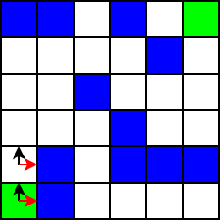
Because the neighbor on the right is explored first, this algorithm is going to explore the dead-end at the bottom-right first.
... visiting 1,2 visiting 2,2 wall at 3,2 visiting 2,1 wall at 3,1 visiting 2,0 visiting 3,0 visiting 4,0 visiting 5,0 ...
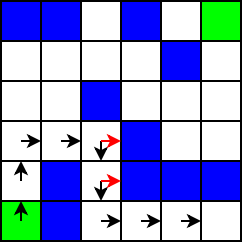
The algorithm is going to backtrack because there is nothing else to explore as we are in a dead-end and we are going to end up at cell (1, 2) again where there is more to explore.
... visited at 4,0 wall at 5,1 visited at 3,0 wall at 4,1 visited at 2,0 wall at 3,1 wall at 1,0 visited at 2,1 wall at 1,1 visited at 2,2 visited at 1,2 wall at 2,3 wall at 1,1 visited at 0,2 visiting 1,3 ...
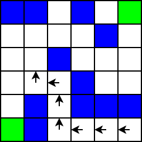
Let’s continue, we end up in a second dead-end at cell (4, 2).
... wall at 2,3 visited at 1,2 visiting 0,3 visited at 1,3 visited at 0,2 visiting 0,4 visiting 1,4 visiting 2,4 visiting 3,4 wall at 4,4 visiting 3,3 visiting 4,3 visiting 5,3 visiting 5,2 wall at 5,1 visiting 4,2 visited at 5,2 wall at 4,1 wall at 3,2 visited at 4,3 ...
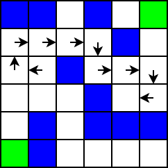
Backtracking happens one more time to go back to cell (5, 3) and we are now on our way to the exit.
... visiting 5,4 visited at 5,3 wall at 4,4 found at 5,5
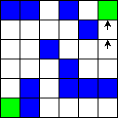
The full walk looks like this:
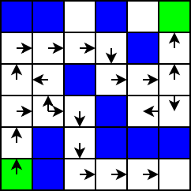
A* search
We are going to look at a more sophisticated algorithm called A* search. This is based on costs to move around the grid. Let’s assume the cost to move horizontally or vertically 1 cell is equal to 10. Again, we cannot move diagonally here.
Before we start describing the algorithm, let’s define 2 variables: G and H. G is the cost to move from the starting cell to a given cell.
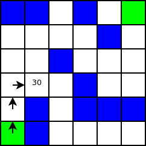
H is an estimation of the cost to move from a given cell to the ending cell. How do we calculate that if we don’t know the path to the ending cell? To simplify, we just calculate the distance if no walls were present. There are other ways to do the estimation but this one is good enough for this example.
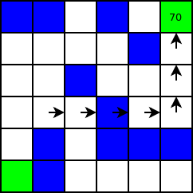
We use 2 lists: an open list containing the cells to explore and a closed list containing the processed cells. We start with the starting cell in the open list and nothing in the closed list.
Let’s follow 1 round of this algorithm by processing our first cell from the open list. It is the starting cell. We remove it from the list and append it to the closed list. We retrieve the list of adjacent cells and we start processing them. The starting cell has 2 adjacent cells: (1, 0) and (0, 1). (1, 0) is a wall so we drop that one. (0, 1) is reachable and not in the closed list so we process it. We calculate G and H for it. G = 10 as we just need to move 1 cell up from the starting cell. H = 90: 5 cells right and 4 cells up to reach the ending cell. We call the sum F = G + H = 10 + 90 = 100. We set the parent of this adjacent cell to be the cell we just removed from the open list: e.g. (0, 0). Finally, we add this adjacent cell to the open list. This is what we have so far. The arrow represents the pointer to the parent cell.
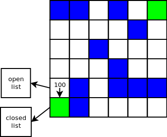
We continue with the cell in the open list having the lowest F = G + H. Only one cell is in the open list so it makes it easy. We remove it from the open list and we get its adjacent cells. Again, only one adjacent cell is reachable: (0, 2). We end up with the following after this 2nd round.
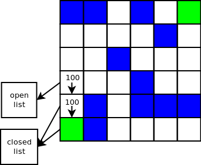
3nd round result looks like this. Cells in green are in the open list. Cells in red are in the closed list.
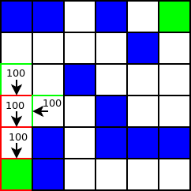
Let’s detail the next round. We have 2 cells in the open list: (1, 2) and (0, 3). Both have the same F value so we pick the last one added which is (0, 3). This cell has 3 reachable adjacent cells: (1, 3), (0, 2) and (0, 4). We process (1, 3) and (0, 4). (0, 2) is in the closed list so we don’t process that one again. We end up with:
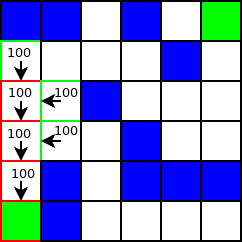
Let’s fast forward to:
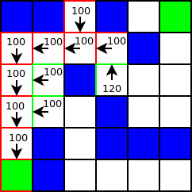
We have (1, 2), (1, 3) and (3, 3) in the open list. (1, 3) is processed next because it is the last one added with the lowest F value = 100. (1, 3) has 1 adjacent cell which is not in the closed list. It is (1, 2) which is in the open list. When an adjacent cell is in the open list, we check if its F value would be less if the path taken was going through the cell currently processed e.g. through (1, 3). Here it is not the case so we don’t update G and H of (1, 2) and its parent. This trick makes the algorithm more efficient when this condition exists.
Let’s take a break and look at a diagram representing the algorithm steps and conditions:
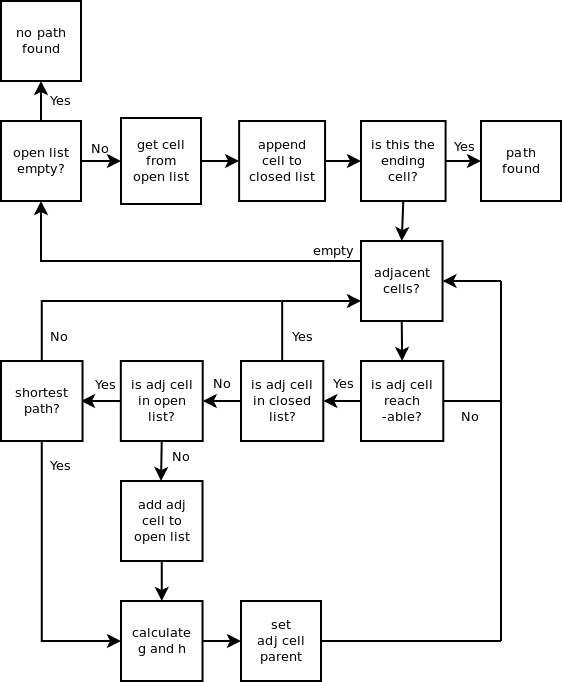
We continue processing the cells remaining in the open list. Fast forward to:
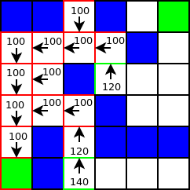
We have 2 cells in the open list: (3, 3) and (2, 0). The next cell removed from the open list is (3, 3) because its F is equal to 120. This proves that this algorithm is better than the first one we saw. We don’t end up exploring the dead end at (5, 0) and we continue walking from (3, 3) instead which is better.
Fast forward again to:
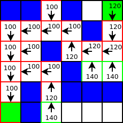
The next cell processed from the open list is (5, 5) and it is the ending cell so we have found our path. It is easy to display the path. We just have to follow the parent pointers up to the starting cell. Our path is highlighted in green on the following diagram:
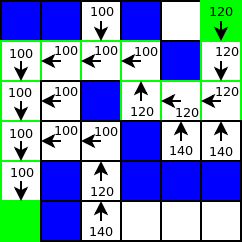
You can read more about this algorithm here.
A* implementation
The basic object here is a cell so we write a class for it. We store the coordinates x and y, the values of G and H plus the sum F.
class Cell(object):
def __init__(self, x, y, reachable):
"""
Initialize new cell
@param x cell x coordinate
@param y cell y coordinate
@param reachable is cell reachable? not a wall?
"""
self.reachable = reachable
self.x = x
self.y = y
self.parent = None
self.g = 0
self.h = 0
self.f = 0
Next is our main class named AStar. Attributes are the open list heapified (keep cell with lowest F at the top), the closed list which is a set for fast lookup, the cells list (grid definition) and the size of the grid.
class AStar(object):
def __init__(self):
self.opened = []
heapq.heapify(self.opened)
self.closed = set()
self.cells = []
self.grid_height = 6
self.grid_width = 6
...
We create a simple method initializing the list of cells to match our example with the walls at the same locations.
def init_grid(self):
walls = ((0, 5), (1, 0), (1, 1), (1, 5), (2, 3),
(3, 1), (3, 2), (3, 5), (4, 1), (4, 4), (5, 1))
for x in range(self.grid_width):
for y in range(self.grid_height):
if (x, y) in walls:
reachable = False
else:
reachable = True
self.cells.append(Cell(x, y, reachable))
self.start = self.get_cell(0, 0)
self.end = self.get_cell(5, 5)
Our heuristic compute method:
def get_heuristic(self, cell):
"""
Compute the heuristic value H for a cell: distance between
this cell and the ending cell multiply by 10.
@param cell
@returns heuristic value H
"""
return 10 * (abs(cell.x - self.end.x) + abs(cell.y - self.end.y))
We need a method to return a particular cell based on x and y coordinates.
def get_cell(self, x, y):
"""
Returns a cell from the cells list
@param x cell x coordinate
@param y cell y coordinate
@returns cell
"""
return self.cells[x * self.grid_height + y]
Next is a method to retrieve the list of adjacent cells to a specific cell.
def get_adjacent_cells(self, cell):
"""
Returns adjacent cells to a cell. Clockwise starting
from the one on the right.
@param cell get adjacent cells for this cell
@returns adjacent cells list
"""
cells = []
if cell.x < self.grid_width-1:
cells.append(self.get_cell(cell.x+1, cell.y))
if cell.y > 0:
cells.append(self.get_cell(cell.x, cell.y-1))
if cell.x > 0:
cells.append(self.get_cell(cell.x-1, cell.y))
if cell.y < self.grid_height-1:
cells.append(self.get_cell(cell.x, cell.y+1))
return cells
Simple method to print the path found. It follows the parent pointers to go from the ending cell to the starting cell.
def display_path(self):
cell = self.end
while cell.parent is not self.start:
cell = cell.parent
print 'path: cell: %d,%d' % (cell.x, cell.y)
We need a method to calculate G and H and set the parent cell.
def update_cell(self, adj, cell):
"""
Update adjacent cell
@param adj adjacent cell to current cell
@param cell current cell being processed
"""
adj.g = cell.g + 10
adj.h = self.get_heuristic(adj)
adj.parent = cell
adj.f = adj.h + adj.g
The main method implements the algorithm itself.
def process(self):
# add starting cell to open heap queue
heapq.heappush(self.opened, (self.start.f, self.start))
while len(self.opened):
# pop cell from heap queue
f, cell = heapq.heappop(self.opened)
# add cell to closed list so we don't process it twice
self.closed.add(cell)
# if ending cell, display found path
if cell is self.end:
self.display_path()
break
# get adjacent cells for cell
adj_cells = self.get_adjacent_cells(cell)
for adj_cell in adj_cells:
if adj_cell.reachable and adj_cell not in self.closed:
if (adj_cell.f, adj_cell) in self.opened:
# if adj cell in open list, check if current path is
# better than the one previously found for this adj
# cell.
if adj_cell.g > cell.g + 10:
self.update_cell(adj_cell, cell)
else:
self.update_cell(adj_cell, cell)
# add adj cell to open list
heapq.heappush(self.opened, (adj_cell.f, adj_cell))
You can checkout the code on GitHub: git clone https://laurentluce@github.com/laurentluce/python-algorithms.git.
That’s it for now. I hope you enjoyed the article. Please write a comment if you have any feedback.
James Mills wrote:
This is very nice. Good read!
cheers
James
Link | March 10th, 2011 at 6:19 pm
Laurent Luce wrote:
@James: Thanks!
Link | March 10th, 2011 at 6:41 pm
Evan wrote:
Excellent description and implemention of A*, well explained. Takes me back to my second year of university.
Link | March 10th, 2011 at 10:49 pm
Excellent article and great explanation.
Maybe grid numbers next to the images would help when looking up coordinates repeatedly? Otherwise keep up the python articles!
Link | March 11th, 2011 at 12:00 am
Jonas Elfström wrote:
I wonder how the algorithm would be affected by weave mazes? http://weblog.jamisbuck.org/2011/3/4/maze-generation-weave-mazes
Link | March 11th, 2011 at 3:46 pm
Pale blue dot | Nerdson não vai à escola wrote:
[…] Solving mazes using Python: Simple recursivity and A* search […]
Link | March 12th, 2011 at 6:22 pm
links for 2011-03-14 « pabloidz wrote:
[…] Solving mazes using Python: Simple recursivity and A* search | Laurent Luce's Blog (tags: python) TagsCategoriasmiudezas Uncategorized […]
Link | March 14th, 2011 at 5:02 am
Thanks for the detailed tutorial!
Link | April 19th, 2011 at 11:52 am
Prasanna wrote:
Wonderfully explained.
Link | November 1st, 2011 at 9:25 am
Markus wrote:
Hello,
Thanks for this great tutorial. It really helped me understand the A* method. I know this post is now more than a year old, but I followed it now and noticed something that maybe I do not understand right or might be interesting for others to know:
In the process function on line 17, I think that ‘if c in self.op:’ can never be true since self.op is actually a list of tuples, not a list of cell objects. This leads to the same cell being added multiple times to the open list and eventually slows the algorithm down or even creates an infinity loop in some situations. Am I missing something here or is this really a bug?
Link | July 27th, 2012 at 4:02 am
Laurent Luce wrote:
@Markus: Thanks for noticing this bug in the code. I updated the post.
Link | August 12th, 2012 at 2:01 pm
In update_cell, you assign adj.g = cell.g + 10.
But, this assumes only 4 adjacent cells. If you change get_adjacent_cells to allow diagonal steps, the diagonal increment would be 14. The problem is, update_cell doesn’t know which step is taken. I suggest adding the step to g in get_adjacent_cells.
Also, why do you add 10 to the test on 21?
if c.g > cell.g + 10:
Link | June 11th, 2013 at 3:44 am
I would like to read a follow up of this same article with the Jump Point Search.
Link | June 24th, 2013 at 12:44 pm
Laurent Luce wrote:
@bruce: I indicate at the beginning of the post that only horizontal and vertical moves are allowed. Regarding “if c.g > cell.g + 10”, we are checking if the path going through the current cell is better than what was previously calculated for the adjacent cell. +10 means current path beats adjacent cell path + one move.
Link | August 31st, 2013 at 12:34 pm
nate wrote:
Best Python A* I have found. I would recommend that you publish source in one file. I was able to adopt this into code very quickly. I think it is an example of sane/good OO code oriented toward a Cartesian grid system. Which I imagine would be the starting point for most people exploring A*.
Would be better if Cell.g were less hardwired (to implement diagonal cost.)
Link | October 12th, 2013 at 6:42 pm
Cristian Viorel Pasat wrote:
Thank you for this very_nice explanation, and for your code :).
A lil bit more to work on the pep8, but it’s fine by me :D.
Anyhow, many thanks again.
Link | October 24th, 2013 at 6:28 am
Rémi L wrote:
A big thanks to you ! I’m studying in France and i need to study passfinding with a A star algorithm. And i understand what you do with your code !
Cordialy, a new fan !
Link | March 18th, 2015 at 6:33 pm